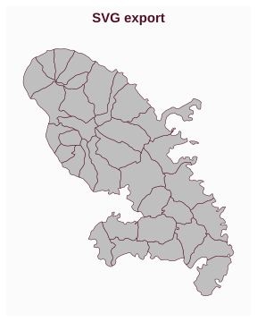
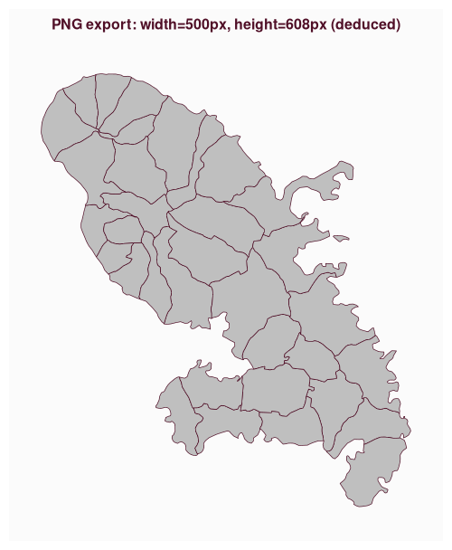
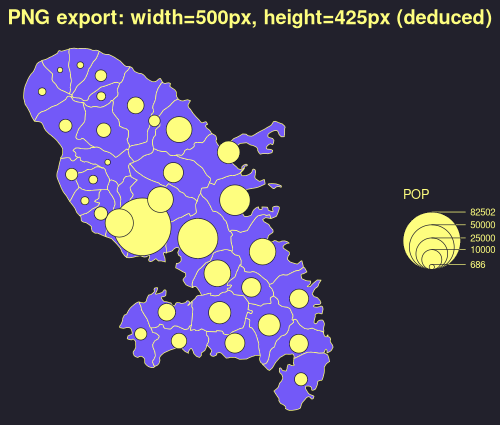

How to Export Maps
Timothée Giraud
2026-05-05
Source:vignettes/how_to_export_maps.Rmd
how_to_export_maps.Rmdmf_svg() and
mf_png() export maps in SVG and PNG
formats, respectively.
SVG export is the perfect solution for editing maps
with desktop vector graphics software, such as Inkscape. SVG is a vector graphics
file format.
PNG export should be used for maps that do not require
further modification. PNG is a raster graphics
file format.
The width/height ratio of the exported map matches that of a spatial
object. If width is specified, then height is
deduced from the width/height ratio of x. Alternatively, if
height is specified, then width is deduced
from the width/height ratio of x.
This helps to produce maps without too much wasted space.
SVG Export
The SVG format is perfect for producing maps that need further editing or resizing.
library(mapsf)
mtq <- mf_get_mtq()
mf_svg(
x = mtq,
filename = "fig/wo_export_fixed_height.svg",
height = 5,
)
mf_map(mtq)
mf_title(txt = "SVG export")
dev.off()
The default driver for building SVG files,
grDevices::svg(), has limitations regarding speed, file
size, editability, and font support. The svglite package aims
to solve these issues. The svglite package is not
lightweight in terms of dependencies, so it is not imported by
mapsf, but rather suggested. However, we strongly recommend
its use if the aim is to edit the maps after export.
PNG Export
In this example we only set the width of the exported
figure.
mf_png(
x = mtq,
filename = "fig/wo_export_fixed_width.png",
width = 500
)
mf_map(mtq)
mf_title(txt = "PNG export: width=500px, height=608px (deduced)", cex = 1)
dev.off()
In the following example, we used the “dracula” theme and we added
space to the right of the plot (50% of x width) in order to
get some extra space for the legend.
mf_theme("dracula")
mf_png(
x = mtq,
filename = "fig/wo_export_fixed_width_expand.png",
width = 500,
expandBB = c(0, 0, 0, .5)
)
mf_map(mtq, expandBB = c(0, 0, 0, .5))
mf_map(mtq, "POP", "prop", leg_pos = "right")
mf_title(txt = "PNG export: width=500px, height=425px (deduced)")
dev.off()